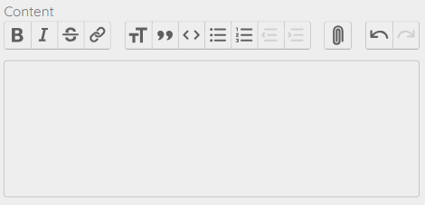
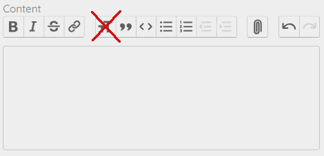

-
Prepare the Blog Post
Write and format the blog post as far as possible in your favourite text editor eg Word. Once prepared, copy into the 'Trix' editor. Formatting options like bold and italics will copy across.
If you don't do it this way, you will encounter frustrations, for example scrolling up to press formatting buttons as the blog gets longer.
-
Formatting Limitations
Formatting options are limited to those offered by the Trix editor (bold, italics, strikethrough, bulleting).
Other formatting options for the blog posts (for example font family, size, color) can be changed in MSP, but not on a post by post basis. Any requested change will affect all blog posts
-
Title
The title is limited to 100 characters and is used in 3 places:
- the displayed/visible title (placed in an html <h1> tag)
- the content of the <title> tag in the html <head>
- the content of the url, but truncated if it includes a colon (':')
e.g. if the title is "Calisthenics vs Weightlifting: Which is for You?"
- the displayed title will be "Calisthenics vs Weightlifting: Which is for You?"
- the title tag wil be "Calisthenics vs Weightlifting: Which is for You? | Blog | The Space Fitness"
- the url will be https://www.thespacefitness.in/blog/calisthenics-vs-weightlifting
-
Don't Use Trix Heading Formatting
For sub-titles in your content, use bold or italics or both
Trix will force content formatted as a heading into an <h1> tag. For SEO, only the main title should be in an h1 tag.
-
Heading Formatting
For sub-titles in your content, you can now use Trix Heading Formatting
Although Trix will save content formatted as a heading into an <h1> tag, (only the main title should be in an h1 tag) the system will convert these to <h2> in the public display.
-
Description
The description is limted to 160 characters. It will be the content of the <meta name = 'description'> tag in the html <head> and shows up in search.
-
Published at
If this date is today or in the past, the blog post will be published, meaning it will appear in the publicly visible blog index and be publicly available to read. An empty date or a date in the future will keep the blog unpublished.
-
Images
- Prepare any images you wish to include to a suitable size in advance. You cannot adjust the image size within the Trix editor. Use dimensions suitable for your blog post, but try and keep the file size small. Run it through an online converter to convert from jpg/png to webp format. Keep the file size small to optimize performance and minimize storage cost.
- Name the image file appropriately. It will be used (in human readable form) as the html <img> tag's 'alt' attribute. This is read by screenreaders and robots and is useful for SEO. For example an image file 'muscle-up.webp' will correspond to an <img> tag with alt='Muscle-up' and 'muscle-up_in_action.jpg' to alt='Muscle-up in action'.
- Images will default to being positioned centrally with an optional caption below them.